Kuorma-auton C ja CE suomeksi
Harjoittele kuorma-autokortin teoriaa: omat kysymykset selityksineen, koeharjoitus sekä ajo- ja lepoajat yhdellä silmäyksellä – suomeksi ja ilman nettiä.
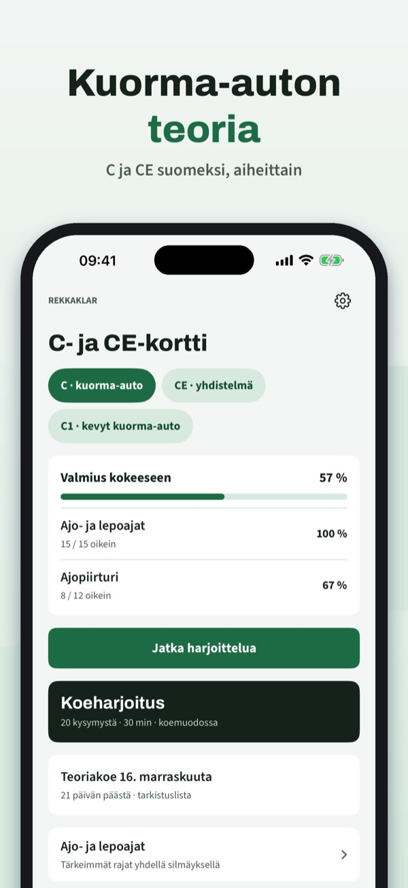
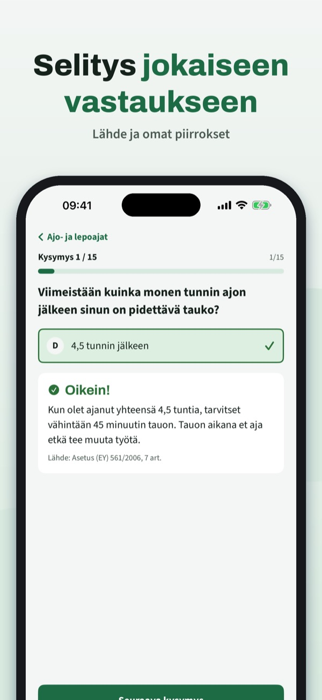
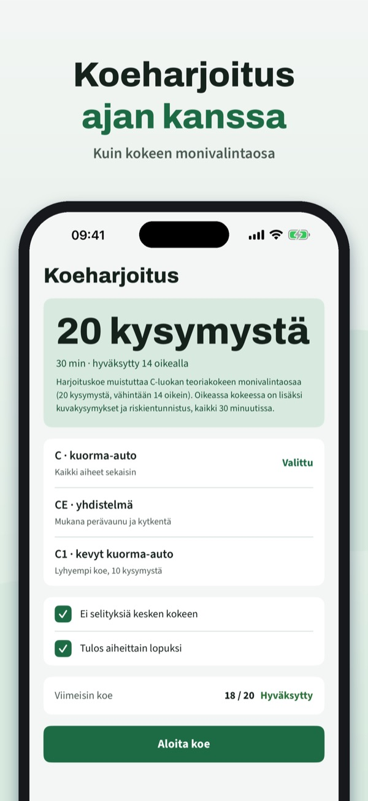
Rekkaklar auttaa harjoittelemaan C-, CE- ja C1-luokan teoriaa – omilla aiheittaisilla kysymyksillä ja selityksillä.
• Kysymykset aiheittain, selitys jokaiseen vastaukseen
Voit harjoitella 20 kysymystä, sanastoa ja tarkistuslistaa ilman ostoa. Täysi versio on kertaosto, joka avaa kaikki kysymykset, koeharjoitukset ja tilastot. Ei tilausta.
Rekkaklar on itsenäinen, ei liity Traficomiin tai Ajovarmaan eikä sisällä virallista kysymyspankkia. Kokeen suoritat Ajovarmassa.
Terms of Use (EULA): https://www.apple.com/legal/internet-services/itunes/dev/stdeula/
Privacy: https://baytechbv.github.io/privacy/lastbil-c-nordic/
Teori for klasse C og CE
Øv teorien til lastebillappen: egne spørsmål med forklaring, prøvetester og kjøre- og hviletid på ett sted – på norsk og uten nett.
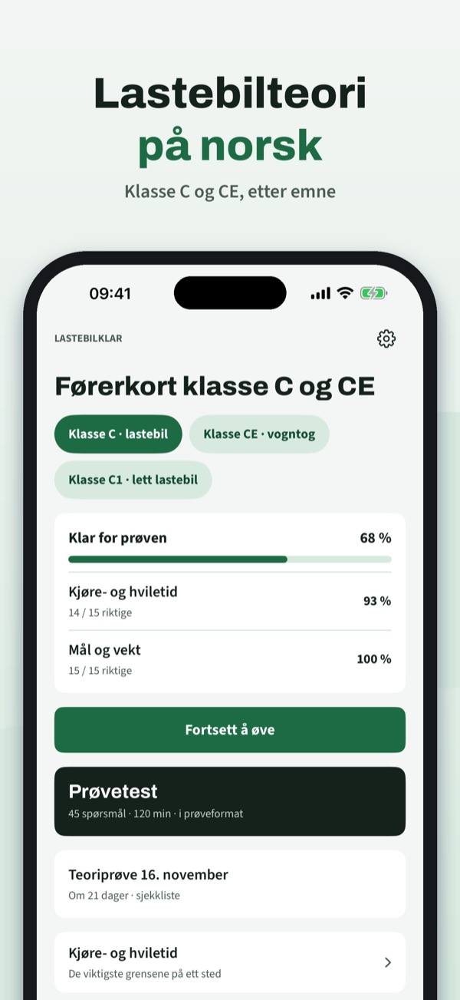
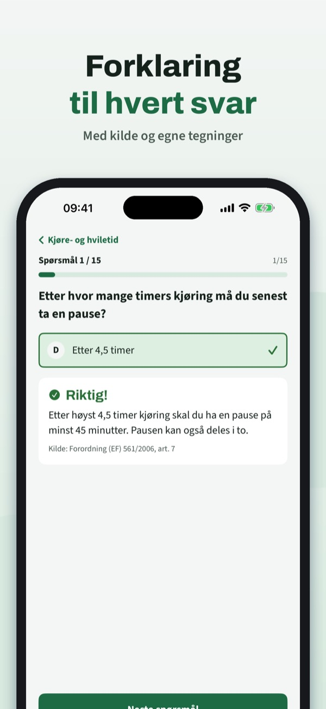
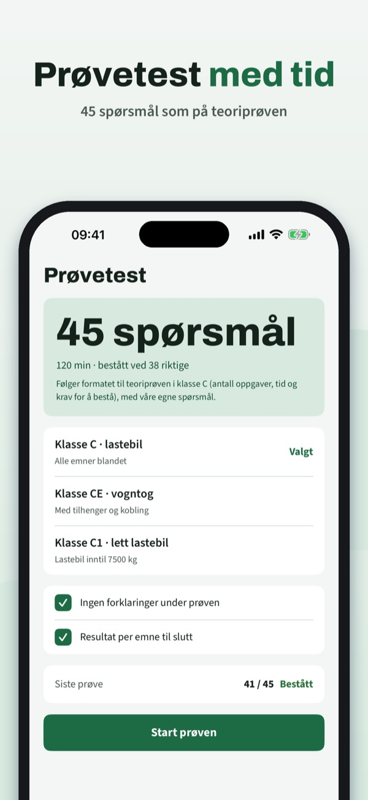
Lastebilklar hjelper deg å øve teorien til klasse C, CE og C1 – med egne spørsmål etter tema og forklaring til hvert svar.
• Spørsmål per emne med forklaring til hvert svar
Du kan øve på 20 spørsmål, ordlisten og sjekklisten uten kjøp. Fullversjonen er et engangskjøp som låser opp alle spørsmål, prøvetester og statistikk. Ingen abonnement.
Lastebilklar er uavhengig, ikke tilknyttet Statens vegvesen og inneholder ikke den offisielle spørsmålsbanken. Prøven tar du hos Statens vegvesen.
Terms of Use (EULA): https://www.apple.com/legal/internet-services/itunes/dev/stdeula/
Privacy: https://baytechbv.github.io/privacy/lastbil-c-nordic/
Teori til lastbil C og CE
Øv teorien til lastbilkørekort: egne spørgsmål med forklaring, prøveeksamen og køre- og hviletid samlet – på dansk og uden internet.
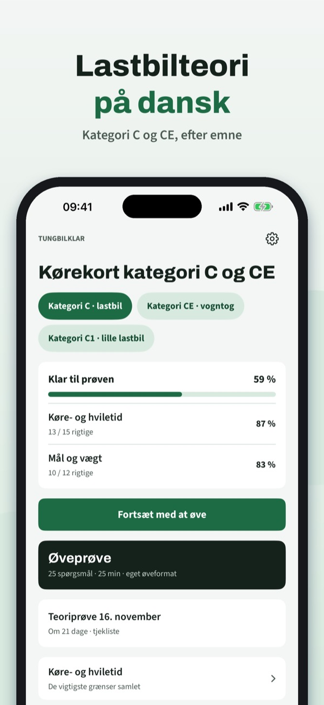
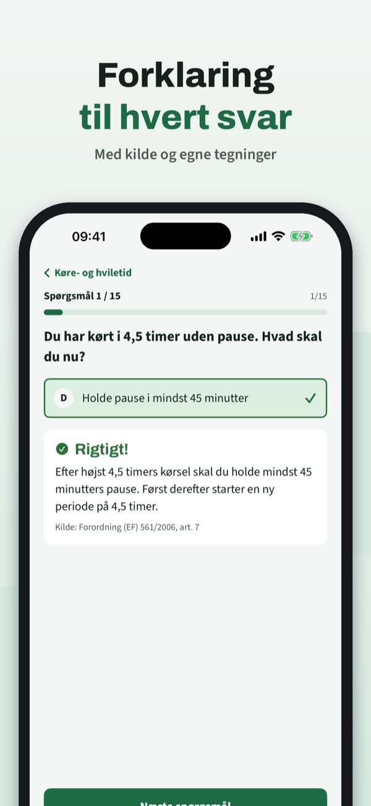
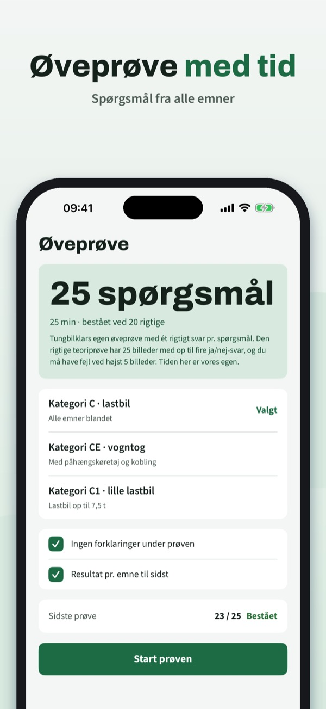
Tungbilklar hjælper dig med at øve teorien til kategori C, CE og C1 – med egne spørgsmål efter emne og forklaring til hvert svar.
• Spørgsmål pr. emne med forklaring til hvert svar
Du kan øve 20 spørgsmål, ordlisten og tjeklisten uden køb. Den fulde version er et engangskøb, der låser alle spørgsmål, prøveeksamener og statistik op. Intet abonnement.
Tungbilklar er uafhængig, ikke tilknyttet Færdselsstyrelsen og indeholder ikke den officielle spørgsmålsbank. Prøven tager du via køreskolen.
Terms of Use (EULA): https://www.apple.com/legal/internet-services/itunes/dev/stdeula/
Privacy: https://baytechbv.github.io/privacy/lastbil-c-nordic/
Teori för lastbil C och CE
Öva teorin för C-körkort: egna frågor med förklaring, övningsprov och kör- och vilotider samlat – på svenska och utan internet.
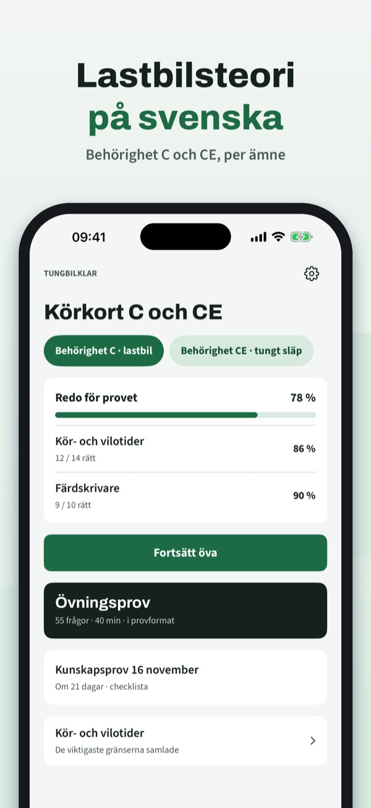
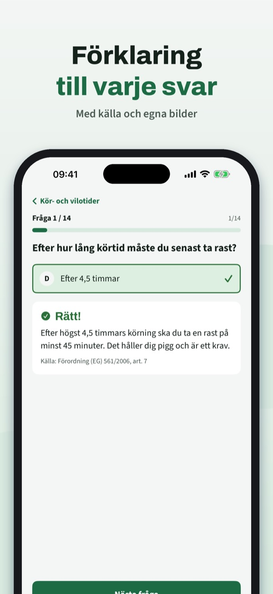
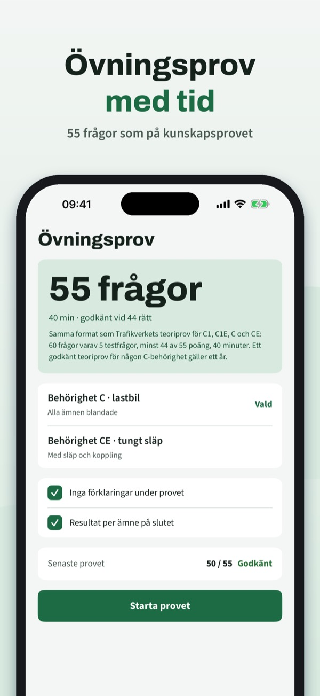
Tungbilklar hjälper dig att öva teorin för behörighet C, CE och C1 – med egna frågor per ämne och förklaring till varje svar.
• Frågor per ämne med förklaring till varje svar
Du kan öva 20 frågor, ordlistan och checklistan utan köp. Fullversionen är ett engångsköp som låser upp alla frågor, övningsprov och statistik. Ingen prenumeration.
Tungbilklar är fristående, inte kopplad till Trafikverket och innehåller inte den officiella frågebanken. Provet gör du hos Trafikverket.
Terms of Use (EULA): https://www.apple.com/legal/internet-services/itunes/dev/stdeula/
Privacy: https://baytechbv.github.io/privacy/lastbil-c-nordic/